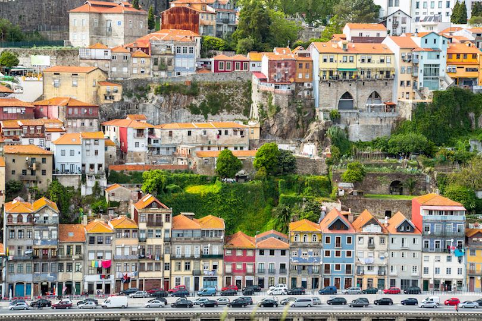

Lisbon

Portugal´s capital city has become increasingly popular with tourists in recent years and it´s easy to see why. With its lovely weather, wealth of historical sites and picturesque setting on the banks of the Tagus River; it´s a fantastic place to spend some time. The impressive St. George´s Castle perched atop of a hill overlooking the city is a popular site to visit as are Belem Tower and the breathtakingly beautiful Jeronimos Monastery. With great, affordable food, Lisbon certainly has something for everyone – make sure to try the famous Pastel de Nata before you leave!
Porto
As it is the home of port, it is somewhat a given that you should try this sweet yet potent alcohol when visiting the city in northern Portugal. Porto is a picturesque place with vibrant colored buildings overlooking the Douro River and the famous white and blue tiles that are so associated with the country are scattered around the city. The numerous hills are dotted with medieval palaces, cathedrals, churches and more and simply wandering around Porto is a delight in itself. Head to the old center of Ribeira for its lively atmosphere, narrow twisting alleys and views over the river.
Sintra

Almost fairytale-like in terms of what is on offer, Sintra has domineering castles, elegant palaces, luxurious villas and royal residences that will entice and astound visitors to this beautiful part of the country. The undoubted highlight is the jaw dropping Pena Palace which is bewitching in its uniqueness. Nestled among a tree-filled hilltop, the bright yellow building looks as if it appeared out of a Disney film, such is its eccentricity and distinctive architectural style. The nearby Moorish Castle is another fantastic place to visit as are the picturesque mountains that surround the area.
Aveiro
With its network of canals, footbridges and colorfully painted boats, it is perhaps unsurprising that Aveiro has been nicknamed the ´Venice of Portugal´. Situated on the Atlantic coast, many people flock here for the picturesque beaches that lie just outside the city and the accompanying watersports on offer. Aveiro itself has more than enough attractions to keep people occupied with the most popular being the impressive Aveiro Cathedral and the ornately decorated Convento de Jesus. Head to Bairro Antigo for some delicious local cuisine.

Braga

Seamlessly mixing the old with the new, the different sides to Braga make it a fascinating place to stop by. The highlight for many is the incredible Bom Jesus do Monte; looking up at it from the bottom of an almost endless flight of steps, the cathedral at the top looks majestic. After a breathless ascent, there is a lovely view of the surrounding area. The historic center of the city is also great to visit and there are numerous churches and museums to pique your interest. The spectacular cathedral dates back almost a thousand years and, coupled with the new modern developments and spread out university campuses; it perfectly presents the different faces of the city.